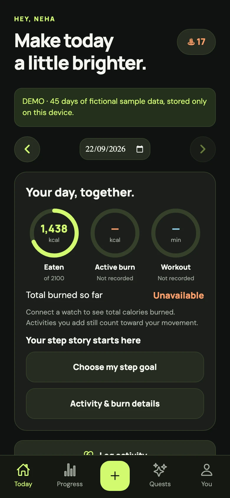
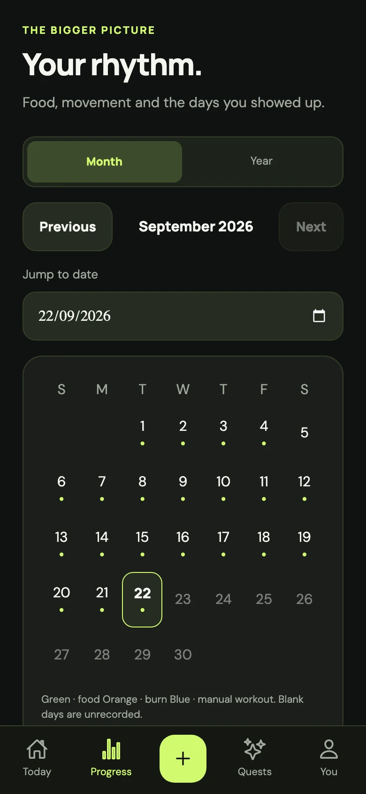

From poha to your own recipe.
Search an offline food library with Indian foods, choose your portion, or add something of your own.
A fitness app with a little heart
Your meals, your movement, your everyday progress. A friendly place to bring it all together.
Learning by building, in the open.
I started with a simple calorie tracker. As it grew, so did the idea: what if meals, movement and daily habits could live together in one friendly place?
That’s becoming Fitkin. You can log the food you actually eat, see your activity, and notice the small things you did for yourself today.
I’m still learning. Every confusing screen, bug report and suggestion helps me make the next version better. I’d love for you to be part of that.
Food and movement make more sense together. Fitkin gives both a place, without turning every day into a test.

Search an offline food library with Indian foods, choose your portion, or add something of your own.
Log a workout, set a step goal, or connect your phone’s health service for supported watch readings.
Explore a month, look back over the year, and turn your progress into a shareable image.
App previews use fictional demo data. No signup is needed to explore the demo.

Under the hood
The source is open, the app is still growing, and the decisions behind it are there to read.
Expo, React Native and TypeScript power the phone and web experience. Fastify and PostgreSQL handle the API and saved data.
Firebase handles sign-in. Health Connect and Apple Health adapters read supported activity through your phone. Android is the current downloadable build.
Kin’s optional online chat can use diary context you choose to share and draft reminders for you to review. It uses free provider quotas.
This is an early community project. Food values are estimates, and physical watch testing is still ongoing. Background health sync depends on your phone, permissions and watch companion app.
Render, Neon and Firebase support the hosted app. Free hosting can take time to wake up, and chat may be unavailable when its free quota runs out. The core demo works without an account.
The Android APK is a direct download. Install updates over the existing app to keep local data. Android asks you to approve installation.
A first app, and a starting point for learning how to turn an idea into something usable.
Food, activity, calendars, reminders and share cards. Now with Kin and a name of its own.
Real-device testing, clearer screens, food-library improvements and fixes shaped by people trying it.
You don’t have to write code to help. Try it, tell me where you got stuck, or suggest a food you couldn’t find.
If you’d like to follow along, a star on GitHub means a lot.